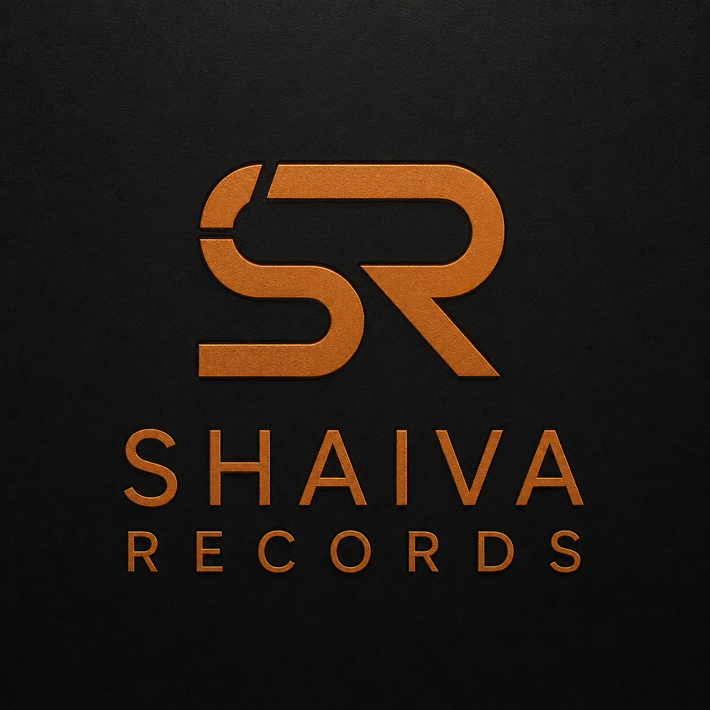
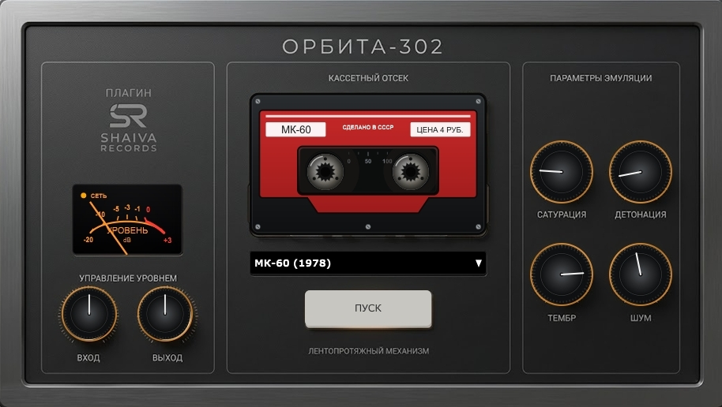
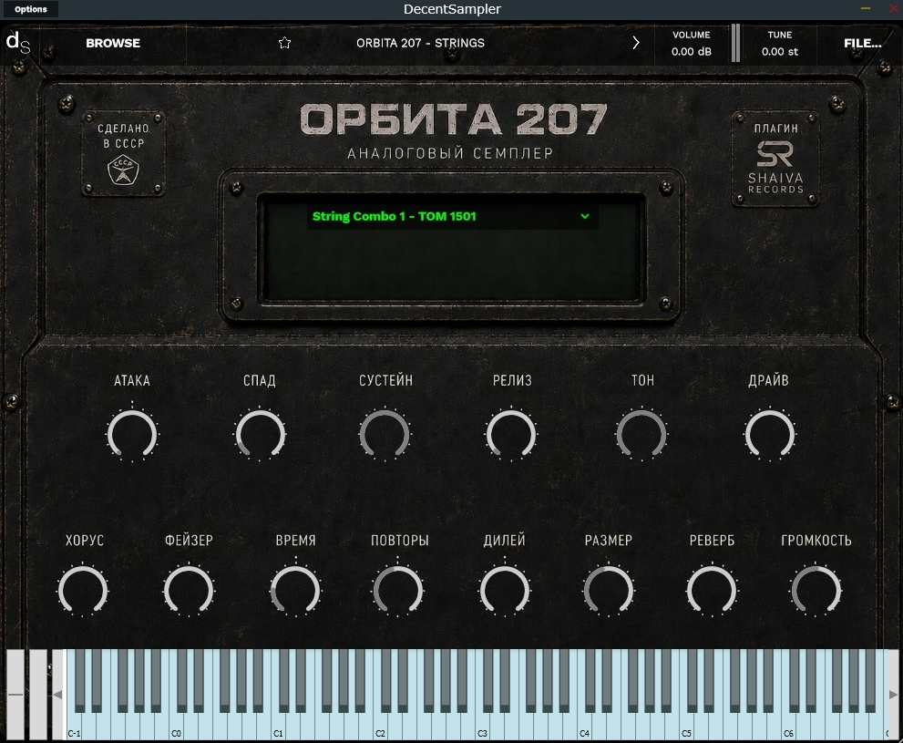
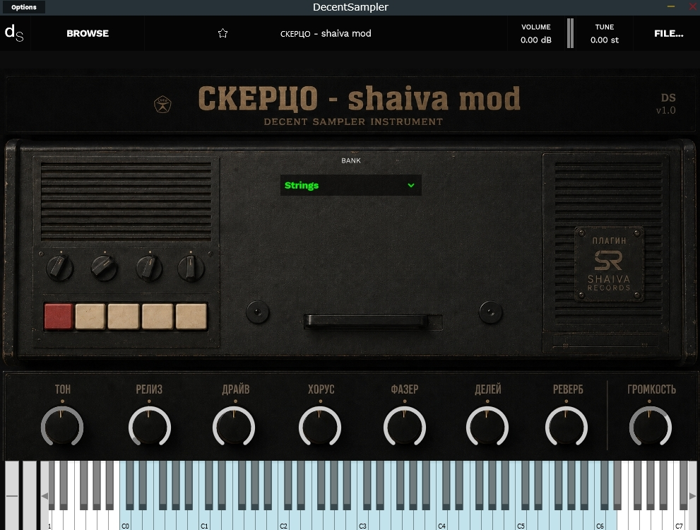
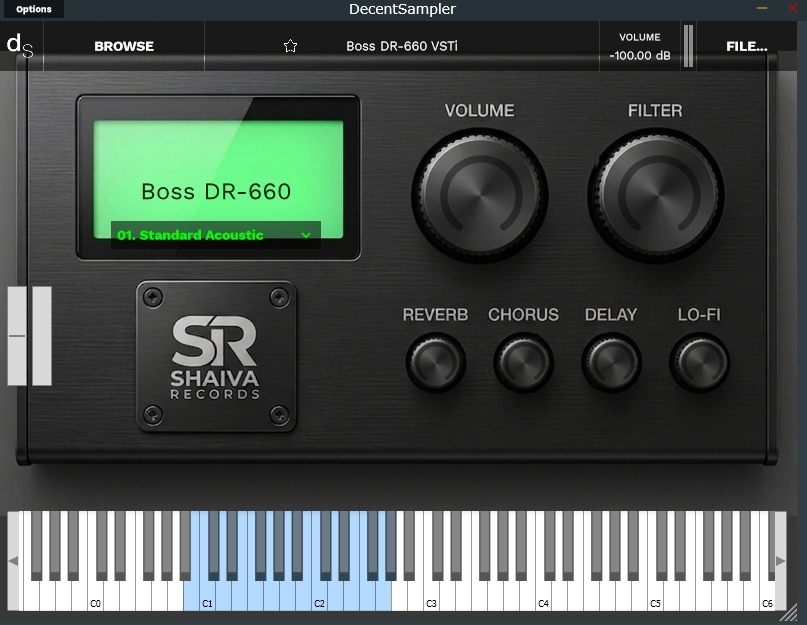
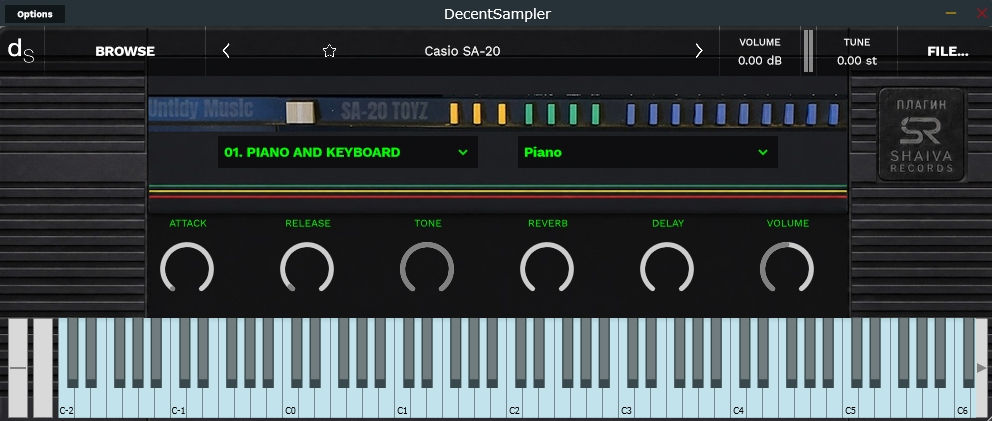
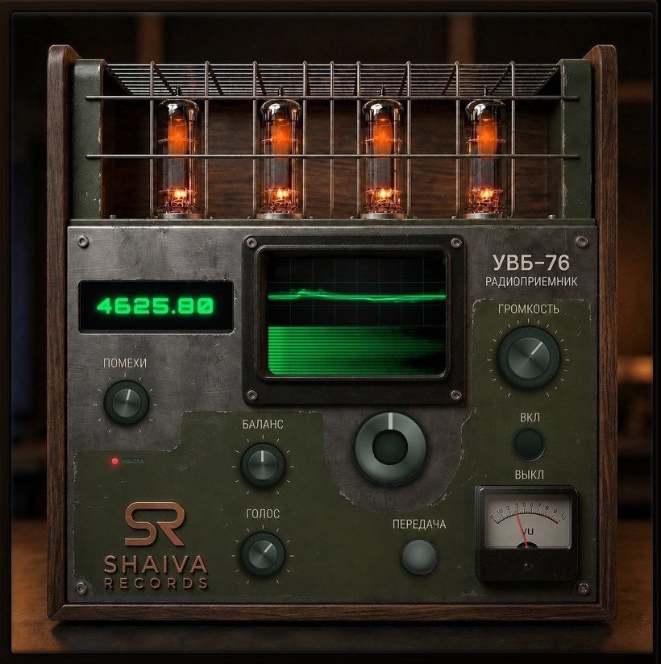
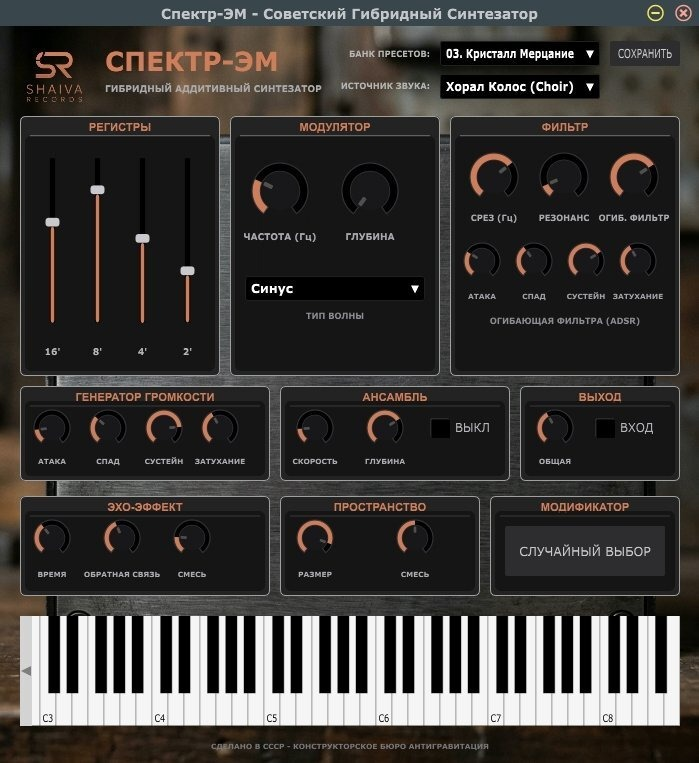

Уникальные Lo-Fi эффекты, виртуальные синтезаторы и оптимизированные сэмплерные библиотеки. Unique Lo-Fi effects, virtual synthesizers, and optimized sampler libraries.

Lo-Fi эффект и сатуратор советских кассет Lo-Fi Soviet cassette effect & saturator
Креативный плагин, созданный для придания трекам теплого, лампового аналогового звучания. Содержит 10 оригинальных профилей шума советских кассет (МК-60, Свема, Тасма, Славич). A creative plugin designed to give your tracks a warm, analog tube sound. Contains 10 original noise profiles recorded from Soviet cassettes (MK-60, Svema, Tasma, Slavich).
Нравится плагин? Поддержите проект Like it? Support development

Гибридная ретро-аналоговая библиотека Hybrid retro-analog library
Сэмплерная библиотека винтажного аналогового характера. Я собрал плотное ретро-звучание и разделил его на 7 оцифрованных тематических категорий (Басы, Лиды, Пэды, Клавишные, Стринги, Базовые волны и Ударные) с кастомным интерфейсом в духе ретро-электроники. A sampler library of vintage analog character. I collected a dense analog sound and split it into 7 optimized thematic categories (Basses, Leads, Pads, Keys, Strings, Basic Waveforms, and Drums) with a custom interface in the spirit of retro electronics.
Нравится плагин? Поддержите проект Like it? Support development

Гибридный аналоговый инструмент Hybrid analog instrument
Сэмплерная библиотека на базе советского электропиано серии «Скерцо». Подходит как для классического электропиано, так и для создания плотных винтажных пэдов и текстур. A sampler library based on the Soviet 'Scherzo' electric piano. Perfect for classic electric piano keys as well as lush vintage pads and textures.
Нравится плагин? Поддержите проект Like it? Support development

Классическая драм-машина 90-х Classic 90s drum machine
Тщательно воссозданное звучание легендарного драм-модуля Boss DR-660. Библиотека создана на основе высококачественных WAV-сэмплов (48kHz / 24-bit). Faithfully recreated sound of the legendary Boss DR-660 drum module. The library is built from high-quality 48kHz / 24-bit WAV samples.
Нравится плагин? Поддержите проект Like it? Support development

Портативный lo-fi синтезатор 90-х Portable 90s lo-fi synthesizer
Виртуальный инструмент на базе легендарной SA-серии. Я восстановил поврежденные файлы, исправил разметку сэмплов, перегруппировал звуки и настроил элементы управления для плеера Decent Sampler. A virtual instrument based on the legendary SA-series. I restored corrupted files, fixed sample mapping, regrouped sounds, and configured controls for Decent Sampler.
Нравится плагин? Поддержите проект Like it? Support development
Проекты, над которыми я активно работаю прямо сейчас. Совсем скоро они появятся в каталоге! Projects I am currently active working on. They will be available in the catalog very soon!

Виртуальный симулятор военной радиостанции Virtual military radio station simulator
Специфический и атмосферный симулятор легендарной коротковолновой военной радиостанции УВБ-76. Проект для любителей радиопомех, секретных передач и Lo-Fi шумов, выполненный в брутальном милитари-дизайне с множеством интерактивных элементов. Отлично подойдет для индастриал, эмбиент и экспериментальной музыки в качестве генератора текстур. A unique and atmospheric simulator of the legendary shortwave military radio station UVB-76. A project for fans of radio interference, coded transmissions, and Lo-Fi noise, designed in a brutal military UI with lots of interactive controls. Perfect as a texture generator for industrial, ambient, and experimental music.

Гибридный аддитивный синтезатор (VST3) Hybrid additive synthesizer (VST3)
Полноценный виртуальный синтезатор со своей уникальной архитектурой. Смешивает аналоговую теплоту и цифровую гибкость для быстрой генерации выразительных тембров и текстур. A complete virtual synthesizer plugin featuring a unique sound architecture. Blends analog warmth with digital flexibility to generate expressive timbres and rich textures.
Я - Иван Попов (Shaiva), музыкальный продюсер, композитор, аранжировщик и звукорежиссёр. Я являюсь создателем и участником нескольких музыкальных проектов, среди которых Shaiva, Velvet Voyage, Medium Contrast, а также дуэт Boldin & Shaiva. I am Ivan Popov (Shaiva), a music producer, composer, arranger, and sound engineer. I am the creator and member of several music projects, including Shaiva, Velvet Voyage, Medium Contrast, and the duo Boldin & Shaiva.
Люблю звуковые эксперименты, постоянный поиск необычных текстур и нестандартных решений. В рамках лаборатории Shaiva Records я занимаюсь поиском, восстановлением, оцифровкой и оптимизацией редких и культовых винтажных музыкальных инструментов, давая второе дыхание старому аналоговому звуку и создавая уникальные виртуальные плагины и сэмплерные библиотеки для коллег-музыкантов. I love sound experiments, constantly searching for unusual textures and non-standard solutions. Through the Shaiva Records laboratory, I focus on finding, restoring, sampling, and optimizing rare vintage musical instruments - giving new life to old analog sounds and building unique virtual plugins and libraries for fellow musicians.
Все мои разработки (синтезаторы, эффекты и библиотеки) полностью бесплатны и создаются на чистом энтузиазме. Если вам нравится мой софт и вы хотите помочь в создании новых инструментов, вы можете сделать добровольный разовый перевод. All my synthesizers, effects, and sample libraries are completely free and created out of pure passion. If you enjoy using my software and want to help build new tools, you can make a voluntary one-time support contribution.